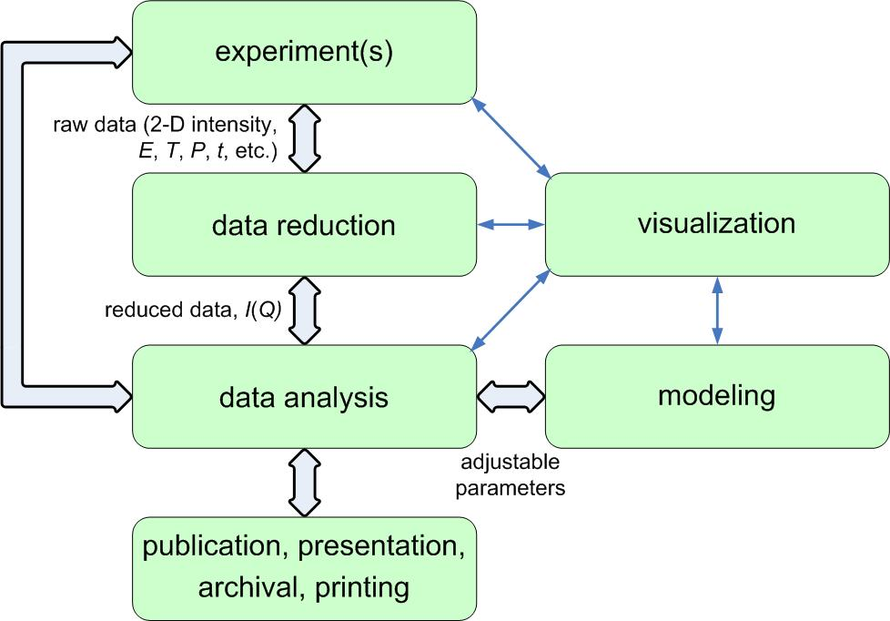
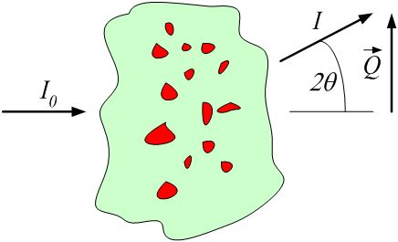
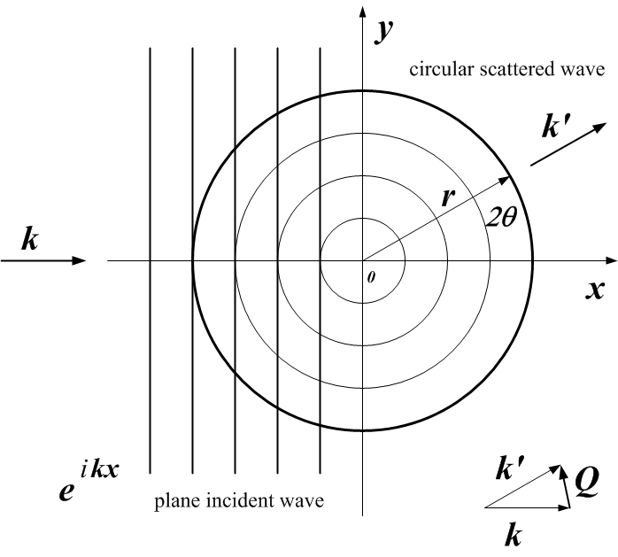
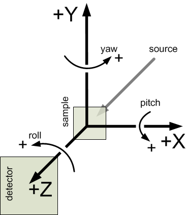

Table Of Contents
Previous topic
Next topic
Overview of the canSAS2012 data format
Overview of the canSAS2012 data format
For the general case of small-angle scattering data, all that is required is to have measurements of reduced intensity \(I\) as a function scattering vector, \(Q\). Some techniques may require additional information, such as wavelength.
What is reduced data? Consider this figure of the scientific workflow presented at the 2006 Advanced Photon Source Workshop on Scientific Software (ANL-APS-TB-51, Argonne National Laboratory):

Note
Reduced data is the data presented for analysis after all instrument-specific artifacts and corrections have been applied.
An experiment is constructed from a sequence of measurements by a scientific instrument. Raw data from those measurements must be converted from the format received by components of the instrument (detectors, amplifiers, motors, encoders, thermocouples, etc.) into a form suitable for analysis particular to the scientific investigation. Part of the conversion process involves the removal of artifacts and the correction of distortions of the signal by the measurement process (such as detector dead-time corrections or removal of dead pixels from an area detector image) and the combination of parameters describing the instrument configuration and even the possibility of an applied mask to remove parts of the measurement that contain no useful observations. The data that results after all these conversion steps have been applied is termed reduced data.
In broad terms, the steps involved in the process of data reduction are particular to a specific scientific instrument as it existed at a specific time. For many scientific instruments, such as those at large user facilities, it is not possible to generalize the process of data reduction and identify all the parameters necessary for data reduction in advance.
Note
It is, and will always be, the responsibility of the instrument team to provide the process of converting the data measurements into reduced data.
The absolute minimum information required for the standard analysis of small-angle scattering measurements is intensity as a function of scattering vector, \(I(Q)\).
Some analyses may require additional information such as the estimation of experimental uncertainties, the wavelength and type of the radiation probe, or the instrumental resolution. These should be provided, where possible. Note that, for example, reduced SAS data does not require a number representing the distance from sample to detector as this common instrument-specific term has already been factored into the data reduction process.
\(Q\) may be represented either as the magnitude of the scattering vector, \(|Q|\) or by the three-dimensional scattering vector \(\vec{Q}\). When we write \(Q\), we may refer to either or both of \(|Q|\) or \(\vec{Q}\), depending on the context.
where \(\lambda\) is the wavelength of the radiation, and \(2\theta\) is the angle through which the detected radiation has been scattered. This is a one-dimensional reduction of the general case below.
definition of \(|Q|\) geometry for small-angle scattering
where \(\vec{k}\) is the wave vector of the incident radiation and \(\vec{k'}\) is the wave vector of the scattered radiation. Here, \(\vec{k}\) is a vector of magnitude \(2\pi/\lambda\) that points along the trajectory of the radiation.
definition of \(\vec{Q}\) geometry for small-angle scattering [1]
| [1] | A hearty nod for this graphic is given to the guide: neutron scattering: A Primer, by Roger Pynn (LANSCE), published in the Summer 1990 edition of Los Alamos Science. |
The intensity may be represented in one of these forms:
This presents a few problems for analysis software to sort out when reading the data. Fortunately, it is possible to analyze the units to determine which type of intensity is being reported and make choices at the time the file is read. But this is an area for consideration and possible improvement.
One problem arises with software that automatically converts data into some canonical units used by that software. The software should not convert units between these different types of intensity indiscriminately.
A second problem is that when arbitrary units are used, then the set of possible analytical results is restricted. With such units, no meaningful volume fraction or number density can be determined directly from \(I(Q)\).
In some cases, it is possible to apply a factor to convert the arbitrary units to an absolute scale. This should be considered as a possibility of the analysis process.
The canSAS standard assumes a right-hand rule coordinate system, [2], [3], [4] consistent with a variety of software packages and data formats. [5]
| z: | \(z\) is along the trajectory of the incident radiation (positive value in the direction towards the detector) |
|---|---|
| x: | \(x\) is orthogonal to \(z\) in the horizontal plane (positive values increase to the right when viewed towards the incoming radiation) |
| y: | \(y\) is orthogonal to \(z\) and \(x\) in the vertical plane (positive values increase upwards) |
| [2] | http://en.wikipedia.org/wiki/Coordinate_system#Cartesian_coordinate_system |
| [3] | http://en.wikipedia.org/wiki/Polar_coordinate_system |
| [4] | http://en.wikipedia.org/wiki/Spherical_coordinate_system |
| [5] | http://www.nexusformat.org/Coordinate_Systems

definition of the coordinate axes for translations and rotations |
Orientation angles [6] in the canSAS standard describe single-axis rotations. Rotations about multiple axes require more information. The rotations are described in terms of roll, pitch, and yaw [7] :
| roll: | a rotation about the \(z\) axis, where zero rotation is along the positive \(x\) axis |
|---|---|
| pitch: | a rotation about the \(x\) axis, where zero rotation is along the positive \(z\) axis |
| yaw: | a rotation about the \(y\) axis, where zero rotation is along the positive \(z\) axis |
| [6] | http://en.wikipedia.org/wiki/Orientation_%28geometry%29 |
| [7] | http://en.wikipedia.org/wiki/Tait-Bryan_angles#Aircraft_attitudes |